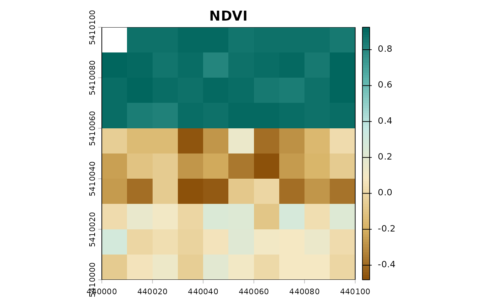

Plots a single-layer or selected layer from a terra::SpatRaster index object
using tailored color palettes designed for vegetation, water, soil, urban, and custom analysis.
Arguments
- x
A
terra::SpatRasterobject containing index values.- index
Optional character string specifying which layer to plot if
xcontains multiple layers.- main
Optional plot title. Defaults to the layer name.
- col
Optional color palette. If
NULL(default), an appropriate palette is automatically chosen based on the index category or a perceptual palette for custom indices.- ...
Additional graphical arguments passed to
terra::plot.
Value
Invisible terra::SpatRaster object that was plotted.
Examples
img <- get_example_data()
ndvi <- geo_index(img, "NDVI")
plot_index(ndvi)
